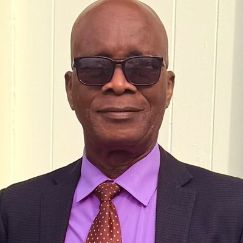
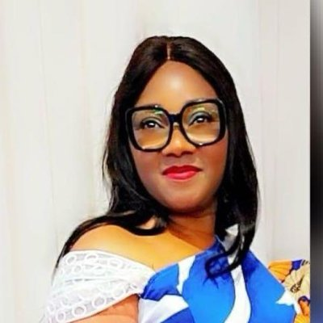

Chairman
Ven. Dr. Barnabas C. Emenogu
The elected officers who lead the Omukwu Family USA & Canada Association.
Ven. Dr. Barnabas C. Emenogu
Louis Ohanaga

Ignatius Uwazie

Mrs Judith Ijeoma Ohanaga
Christian Anyawoke

Dr Ijeoma Agbara
Jamike Okoroji